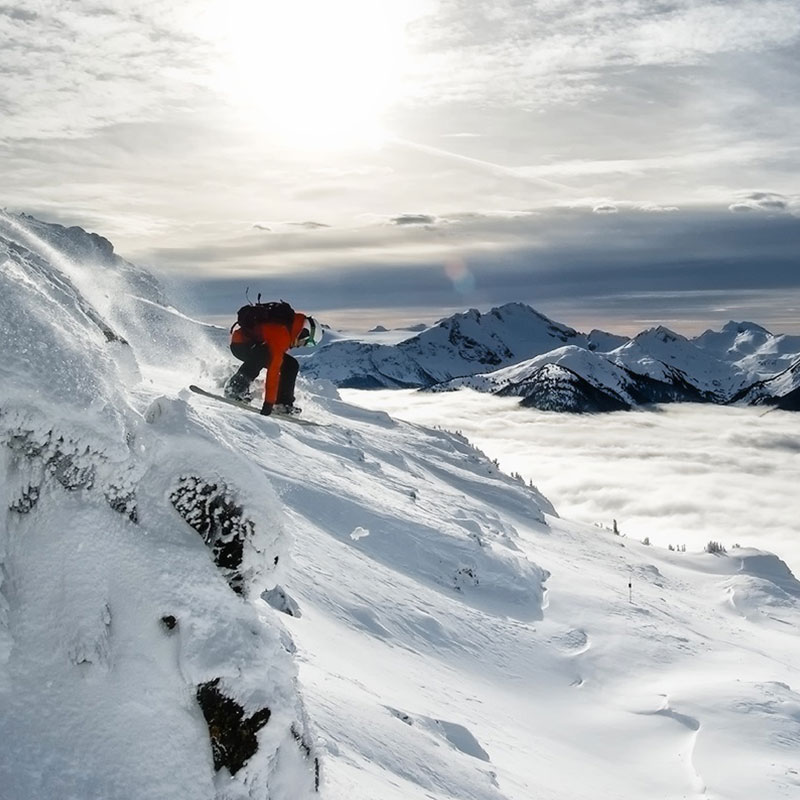

<div id="content">
  <div id="main">
    <div class="container">
      <div class="one_third">
        
      </div>

     <div class="two_third last">
        <h1>Casey Lucas</h1>
        <div><span style="font-family: Helvetica;"><a href="https://youtu.be/QAKMEh-0L8U">CLICK HERE TO SEE CASEY RIDE</a></span>
        </div>
        <div><strong><br /></strong>
        </div>
        <div><strong style="font-family: Helvetica;">MEET CASEY...&nbsp;</strong><span>Freerider out of South Lake Tahoe, California. I have been snowboarding for 16 years and grew up skiing prior to that. I have been competing since 2006 placing in top spots in the North Face Masters, Subaru Freeride Series, Rahlves Banzai Tour, Alaska King of the Hill, Alaska Arctic Man Challenge and     placed 5th overall on the Freeride World Tour in 2013. Today I am freeriding away from the competition scene enjoying the backcountry with friends, where she is able to capture those memorable moments shooting film and photos. I also love mountain biking, most water sports, Crossfitting, hiking, traveling and up for most adventures.&nbsp;</span>
        </div>
        <div>
          <br /> </div>
        <div><strong style="font-family: Helvetica;">CASEY'S FAVORITE NS BOARD IS...&nbsp;</strong><span>The&nbsp;157 Raven and the154 Infinity.The Raven is my favorite snowboard of all time! It's the ultimate big mountain crusher! When I send a big cliff I can depend on my Raven to have my back. It has a narrow stance for my small feet, massive pop and unbeatable stability at high speeds. No female board is even comparable to the overall ride of the Raven.&nbsp;The Infinity is a blast in every condition. This is my go to board early and late season when I get to play in the park and rip high speed groomers. Playful and fun the Infinity is definitely a must for every women's quiver.</span>
        </div>
        <div>
          <br />
        </div>
      </div>
      <hr>
  </div>
</div>